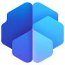

Processes without shadow spreadsheets.
We automate processes and build business applications with Power Platform, with enterprise governance and security.
Do you recognize any of these situations?
These are the situations we see most often when a project starts. If any sounds familiar, let's talk.
Let's talkRepetitive tasks
People copying data from one system to another.
Approvals by email
Workflows that depend on someone answering an email.
Shadow apps
Solutions built by business areas without IT oversight.
Paper forms
Customer or supplier processes that are still not digital.
Microsoft technology, chosen for your process.
Power Apps
Low-code business applications on Dataverse.
When it fits: When a process needs its own app quickly.
Details at Microsoft ↗Power Automate
Workflow automation and RPA.
When it fits: When there are repetitive tasks across systems.
Details at Microsoft ↗Power Pages
Secure external portals for customers and suppliers.
When it fits: When third parties need to interact with your processes.
Details at Microsoft ↗
AI Builder
AI models for documents, forms and prediction.
When it fits: When documents are still keyed in by hand.
Details at Microsoft ↗Power Platform
Governance, environments and center of excellence.
When it fits: When Power Platform grows and needs control.
Details at Microsoft ↗Product icons and names are Microsoft trademarks and are used only to identify the products we implement.
Fusion teams and sprints.
Your power users and our team build together: prototype first, sprints with demos and governance rules that let you publish safely. Based on Microsoft's Power Platform adoption guidance and the Fabric adoption roadmap.
-
We pick the right process and define the expected outcome.
Milestone · Backlog and metrics agreedWhat we do
- Workshop with the users who live the process today.
- Prioritization by value, effort and available data.
- Success metrics and solution owner defined.
- Environments, data policies (DLP) and starting licensing.
What you get
- Prioritized backlog.
- Agreed success metrics.
- Environment ready for prototyping.
AIAI in this phase
Analysis of the process and existing data to propose design alternatives.
-
A prototype users try before the solution is built.
Milestone · Prototype validated with usersWhat we do
- Prototype in Power Apps, Power Automate or Power BI on representative data.
- Test sessions with users and immediate adjustments.
- Architecture decision: Dataverse, connectors, Fabric.
- Security and compliance validation of the prototype.
What you get
- Prototype validated by users.
- Final architecture and scope.
- Refined build estimate.
AIAI in this phase
Draft apps, flows and reports generated with Copilot from the process description.
-
Your power users and our team build together, sprint by sprint.
Milestone · Sprint demoWhat we do
- Fusion team: power users (makers), W-IT developers and IT.
- Sprints with a demo at the end and a living backlog.
- ALM: development, test and production environments, with pipelines.
- Functional and performance testing on every increment.
What you get
- Usable increments every sprint.
- Living solution documentation.
- Makers trained during the build.
AIAI in this phase
AI-assisted formulas, expressions and tests, with automated quality review.
-
We go live with digital guardrails: governance that enables rather than blocks.
Milestone · Governed go-liveWhat we do
- Publishing in managed environments with data policies.
- Security: roles, data access and compliance.
- Training and launch support.
- Usage telemetry from the start.
What you get
- Solution in production and governed.
- Trained users.
- Usage and adoption dashboard.
AIAI in this phase
Real usage measurement and early adoption alerts.
-
We take the model to more processes with a Center of Excellence.
Milestone · Maturity reviewWhat we do
- Center of Excellence (CoE): standards, inventory and platform monitoring.
- Maker community and mentoring.
- Backlog of new apps, flows and reports ranked by value.
- Maturity assessment and improvement plan.
What you get
- CoE running with defined roles.
- Roadmap of new solutions.
- Measured maturity level.
AIAI in this phase
Detection of AI automation opportunities in processes already digitized.

Shall we talk about your case?
Tell us what you have in mind and we will discuss your scenario, no strings attached.